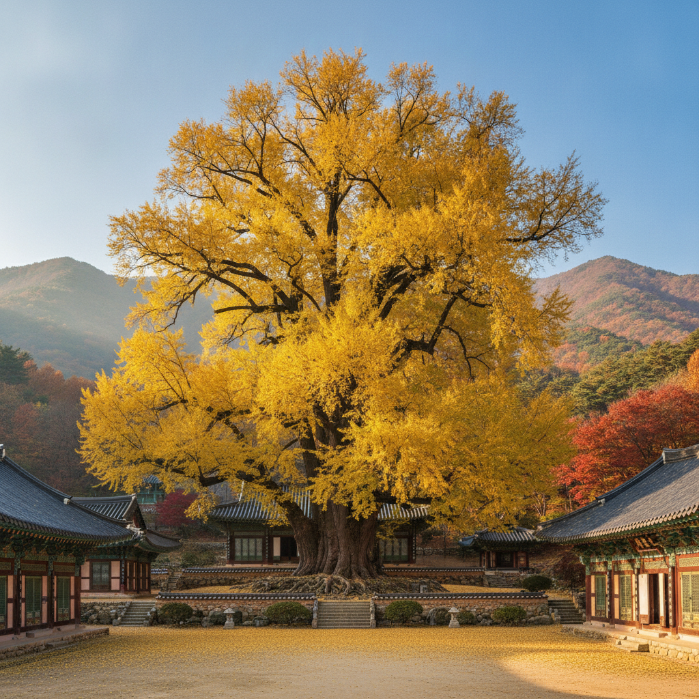
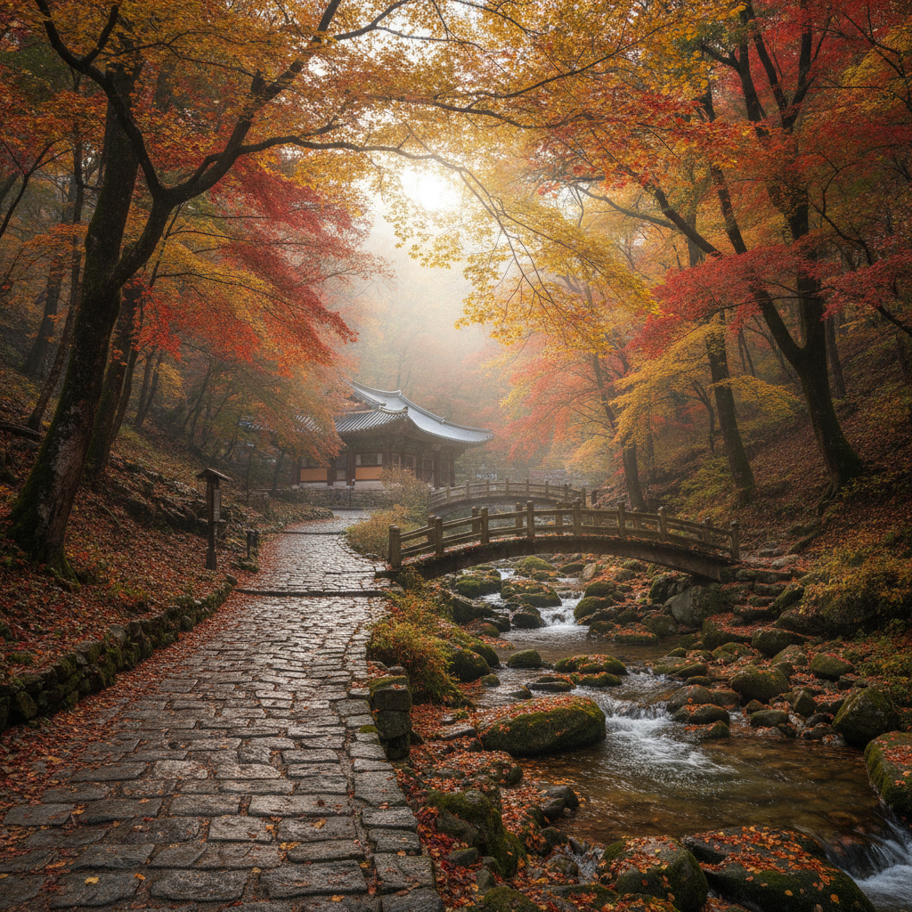

용문사 은행나무 단풍 언제 절정인가 — 양평 드라이브 코스와 주차·두물머리 비교
양평 용문사 은행나무 단풍의 절정 시기는 매년 10월 20일경부터 11월 초순(10월 25일 전후 피크)이며, 수령 약 1,100년에 달하는 천연기념물 은행나무가 웅장한 황금빛으로 물드는 수도권 최고의 가을 명소입니다.
입장료는 문화재보호법 개정으로 무료이며, 용문산관광단지 주차장은 소형차 기준 1일 3,000원에 운영되나 단풍 절정 주말에는 오전 9시 30분부터 진입로 정체가 시작되므로 오전 8시대 도착을 적극 권장합니다.
양평의 또 다른 가을 명소인 두물머리와의 코스 특성, 6번 국도 드라이브 동선, 그리고 시간대별 주차 전략을 비교 분석해 당일치기 여행 일정을 완벽히 세워보세요.

용문사 1,100년 거대 은행나무의 황금빛 단풍 절정 풍경 / AI 제작 이미지
01 | 1,100년 수령의 용문사 은행나무 단풍 절정 시기
경기도 양평군 용문산 자락에 자리한 용문사 은행나무는 천연기념물 제30호로 지정된 국내 최고령이자 최대 규모의 은행나무입니다. 높이 약 42m, 줄기 둘레가 14m를 넘어서며, 신라 마의태자가 나라를 잃고 금강산으로 향하던 길에 심었다는 설화와 의상대사의 지팡이가 자라났다는 전설이 전해져 내려옵니다.
이 은행나무의 단풍은 일반 가을 산림의 붉은 단풍보다 다소 늦게 절정에 도달하는 특징을 보입니다. 10월 초순부터 나뭇가지 끝부분부터 연한 노란빛이 돌기 시작하며, 나무 전체가 빈틈없이 눈부신 황금빛으로 뒤덮이는 절정 주간은 10월 20일에서 10월 30일 사이입니다. 11월 첫째 주까지도 잎이 유지되지만 바람이 불면 일제히 황금빛 낙엽 비가 내리므로 온전한 잎을 보려면 10월 하순이 가장 이상적입니다.
특히 아침 햇살이 비추는 오전 9시에서 11시 사이에는 웅장한 나뭇가지 사이로 부서지는 햇살이 황금빛 잎새를 통과하며 장엄한 광경을 연출합니다. 이 시기에는 용문산 전체의 붉은 단풍과 거대한 은행나무의 노란 단풍이 절묘한 색상 대비를 이루어 장관을 이룹니다.
02 | 용문사 은행나무 단풍 vs 두물머리 가을 물안개 코스 비교
가을철 양평을 찾는 여행객들이 가장 많이 고민하는 선택지는 용문산 용문사 코스와 북한강·남한강이 만나는 양서면 두물머리 코스입니다. 두 곳 모두 수도권 당일치기 명소로 손꼽히지만 지형적 특성과 즐길 수 있는 테마가 완전히 다릅니다.
용문사는 깊은 산사 트레킹과 역사 깊은 거목의 위용을 감상하는 숲길 힐링형 코스인 반면, 두물머리는 강변 산책과 새벽 물안개, 수령 400년 느티나무 풍경을 즐기는 수변 힐링형 코스입니다. 방문 목적과 동선에 맞춰 어느 곳을 먼저 방문할지 결정해야 효율적인 하루를 보낼 수 있습니다.
| 비교 항목 | 용문사 (용문산관광단지) | 두물머리 (양서면) |
|---|
| 핵심 테마 | 1,100년 천연기념물 은행나무·산사 숲길 단풍 | 남한강·북한강 합수 머리·가을 물안개·느티나무 |
| 단풍 절정 시기 | 10월 20일 ~ 11월 초순 (노란 은행나무 절정) | 10월 중순 ~ 11월 중순 (강변 느티나무·갈대) |
| 추천 방문 시간대 | 오전 08:30 ~ 11:00 (주차난 회피 및 아침 볕) | 새벽 06:30 ~ 08:30 (물안개 감상) 또는 일몰 직전 |
| 보행 난이도 | 완만한 오르막 숲길 도보 약 25~30분 소요 | 완전 평지 수변 산책로 도보 약 15~20분 소요 |
| 입장료 | 무료 (문화재관람료 폐지) | 무료 상시 개방 |
| 주차 요금 | 소형차 3,000원 (관광단지 정액 요금) | 교각 밑 공영 무료 / 민영 유료 (3,000원 수준) |
| 추천 여행객 | 가벼운 산행 및 웅장한 가을 단풍을 원하는 분 | 탁 트인 강변 풍경과 인생 사진, 카페 투어 희망자 |
두 곳을 하루에 모두 둘러보고 싶다면, 이른 아침 7시경 두물머리에서 환상적인 강변 물안개를 먼저 감상한 뒤 6번 국도를 타고 용문사로 이동해 오전 9시 전에 주차장에 안착하는 일정이 가장 권장되는 최적의 루트입니다.
03 | 용문산관광단지 주차장 요금과 주말 만차 회피 시간대
용문사로 향하기 위해서는 먼저 용문산관광단지 공영주차장에 차량을 주차해야 합니다. 사찰 내부까지 일반 차량 진입은 전면 통제되며, 관광단지 입구 주차장에서부터 도보로 이동해야 합니다.
주차장 요금은 입장 시 징수하는 1일 정액 선불제 형태로 운영됩니다. 경차는 1,000원, 일반 승용차 및 소형 SUV는 3,000원, 대형 버스는 5,000원으로 서울 근교 관광지 중 비교적 저렴한 수준입니다. 결제는 신용카드와 간편결제가 모두 가능합니다.
하지만 가을 단풍 시즌 주말에는 주차 수요가 수용 용량을 크게 초과합니다. 평소에는 여유롭던 대형 주차장이 10월 셋째 주부터는 오전 9시 30분을 기점으로 만차 상태에 도달합니다. 주차장이 만차되면 용문산 진입로 왕복 2차선 도로가 2km 이상 가다 서다를 반복하며 1시간 이상 정체될 수 있습니다.
따라서 주말 방문객은 반드시 오전 8시 30분 이전 도착을 목표로 출발하는 것이 안전합니다. 만약 늦게 도착하여 메인 주차장이 만차되었다면 주차 요원의 유도에 따라 관광단지 하단 임시 주차장에 차를 대고 10분 정도 더 걸어 올라가는 방법을 선택해야 시간을 아낄 수 있습니다.
04 | 매표소부터 용문사 대웅전까지 걷는 숲길 코스와 소요시간
용문산관광단지 매표소(현재 무료입장)를 통과하면 일주문에서부터 용문사 대웅전 앞 은행나무까지 이어지는 약 1.5km 길이의 울창한 숲길이 펼쳐집니다. 이 길은 포장된 완만한 오르막길과 흙길, 그리고 맑은 계곡을 따라 조성된 산책로가 나란히 이어집니다.
매표소에서 용문사 은행나무까지 순수 도보 이동 시간은 성인 보통 걸음 기준으로 편도 약 25분에서 30분 정도 소요됩니다. 경사가 완만하여 유모차나 휠체어도 무리 없이 오를 수 있도록 정비되어 있어 가족 단위 나들이객에게도 인기가 높습니다.
가을철 숲길 산책로 좌우로는 단풍나무, 참나무, 느티나무가 어우러져 오색 단풍 터널을 형성합니다. 특히 중간 지점에 놓인 작은 출렁다리와 계곡을 건너는 목교 주변은 물 위에 비치는 붉은 낙엽과 물소리가 어우러져 훌륭한 쉼터가 되어 줍니다. 숨이 가쁘지 않게 천천히 호흡하며 가을 숲의 피톤치드를 들이마시기에 더없이 좋은 힐링 코스입니다.

용문사로 이어지는 호젓한 가을 계곡 숲길 단풍 산책로 / AI 제작 이미지
05 | 용문사 은행나무 관람 포인트와 황금빛 포토스팟 3곳
사찰 입구에 다다르면 계단 위로 솟아오른 압도적인 크기의 황금빛 거목이 시야를 가득 채웁니다. 용문사 은행나무는 워낙 거대하기 때문에 가까이에서는 나무 전체를 한 앵글에 담기가 쉽지 않습니다. 제대로 된 기념사진과 풍경을 남기기 위한 3대 핵심 포토스팟을 기억해 두세요.
첫째, 사천왕문을 지나 사찰 마당으로 오르는 돌계단 아래입니다. 이곳에서 올려다보는 앵글은 은행나무의 거대한 기둥과 하늘을 가리는 황금빛 잎새, 그리고 전통 기와지붕이 삼위일체를 이루어 나무의 웅장함을 가장 극적으로 표현할 수 있습니다.
둘째, 대웅전 앞마당 우측 난간 전망대입니다. 은행나무보다 약간 높은 위치에서 눈높이로 풍성한 은행잎 군락을 마주할 수 있어 인물 사진을 찍기에 가장 화사한 조명을 제공합니다. 인물의 뒤로 빽빽한 황금빛 배경이 채워져 가을 분위기가 극대화됩니다.
셋째, 은행나무 둘레를 감싸고 도는 목재 데크 펜스 하단입니다. 1,100년 풍파를 견뎌낸 주름진 나무껍질과 지지대, 그리고 바닥에 수북이 쌓인 황금빛 낙엽 융단을 함께 담아 고목의 역사성과 가을의 깊이를 입체적으로 표현하기에 적합합니다.
06 | 양평 가을 드라이브 추천 코스 — 6번 국도와 남한강변 드라이브
서울과 경기 동부권에서 양평으로 향하는 여정 자체도 가을의 정취를 만끽할 수 있는 훌륭한 드라이브 코스입니다. 가장 대표적인 경로는 팔당대교를 지나 양평읍을 거쳐 용문사까지 이어지는 6번 국도(경강로) 구간입니다.
팔당댐을 지나면서부터 차창 우측으로 남한강의 푸른 물결이 시원하게 펼쳐지며, 강변을 따라 줄지어 늘어선 가로수들이 노랗고 붉게 물들어 드라이브의 즐거움을 더해줍니다. 주말 낮 시간대에는 6번 국도의 차량 통행량이 많아지므로, 여유로운 풍경을 즐기려면 옥천면 방면의 구도로나 양근대교를 건너 남한강 강남로를 따라 달리는 우회 드라이브 코스를 추천합니다.
용문사 관람을 마친 후 귀가할 때는 용문면에서 지평면을 지나 여주 방면으로 이어지는 한적한 시골 국도를 이용하면 황금빛으로 물든 가을 들녘과 호젓한 저수지 풍경을 여유롭게 감상할 수 있어 혼잡한 도심 복귀길의 피로를 덜 수 있습니다.
07 | 두물머리·세미원 연계 당일치기 1일 여행 동선 설계
양평의 가을을 하루 만에 알차게 즐기기 위해서는 시간대별 동선 배치가 무엇보다 중요합니다. 교통 체증을 최소화하고 명소별 골든타임을 확보할 수 있는 당일치기 추천 타임테이블을 제안합니다.
양평 가을 감성 당일치기 추천 일정
07:30 ~ 08:30 [1코스] 양평 두물머리 아침 산책
새벽 물안개가 피어오르는 두물머리에서 강변 산책과 400년 느티나무 풍경 감상, 유명 연잎핫도그 간식 즐기기.
08:30 ~ 09:15 [이동] 6번 국도 드라이브
양서면 두물머리에서 용문산관광단지 주차장으로 이동 (약 35km, 혼잡 전 이동).
09:15 ~ 11:30 [2코스] 용문산관광단지 & 용문사 은행나무 관람
용문사 숲길 트레킹 후 1,100년 은행나무 단풍 관람, 대웅전 참배 및 사찰 차담 휴식.
11:30 ~ 13:00 [점심 식사] 용문산 입구 산채정식 특화거리
용문산 자락에서 채취한 산나물과 더덕구이, 도토리묵으로 건강한 점심 식사.
13:30 ~ 15:30 [3코스] 세미원 배다리 건너기 또는 양평 물소리길 산책
가을 연꽃밭과 갈대숲 정원이 펼쳐진 세미원을 둘러보며 오후 티타임 갖기.
16:00 ~ 귀가
서울 방면 정체가 극심해지기 전 이른 오후 출발 또는 야경 감상 후 늦은 귀가.
이 일정을 따르면 이른 아침 두물머리의 한적함과 오전 용문사 주차난 회피라는 두 가지 핵심 과제를 모두 해결할 수 있어 스트레스 없는 여행이 완성됩니다.
강변 물안개와 가을 정취가 어우러진 양평 두물머리 풍경 / AI 제작 이미지
08 | 용문산 인근 향토 먹거리 — 산채비빔밥과 양평 해장국 추천
금강산도 식후경이듯 용문사 트레킹을 마친 뒤에는 양평의 대표적인 향토 음식을 맛보는 시간이 기다립니다. 용문산관광단지 입구에는 수십 년 전통의 산채비빔밥 전문 식당가가 길게 형성되어 있습니다.
용문산 고산지대에서 자생하는 곤드레, 취나물, 고사리, 참나물 등 제철 산나물 8~10가지를 정갈하게 담아내고, 직접 띄운 구수한 된장찌개와 더덕구이를 곁들이는 산채정식은 숲길을 걸으며 소모한 에너지를 건강하게 채워줍니다. 나물의 향이 살아 있어 자극적이지 않고 속이 편안한 것이 큰 장점입니다.
만약 든든하고 칼칼한 국물 요리를 선호하신다면 양평읍내로 이동해 원조 양평 해장국을 드셔보시는 것도 좋습니다. 푹 고아낸 소뼈 육수에 신선한 선지와 양(소 위), 콩나물, 대파를 듬뿍 넣고 고추기름으로 칼칼함을 더한 양평 해장국은 쌀쌀해진 가을 환절기 몸을 따뜻하게 녹여주는 최고의 별미입니다. 식사 비용은 산채정식 1만 5천 원 안팎, 해장국 1만 원에서 1만 2천 원 안팎으로 부담 없이 즐길 수 있습니다.
09 | 방문 전 꼭 챙겨야 할 준비물과 복장 체크리스트
가을철 용문산은 산간 분지 지형 특성상 평지인 서울 도심보다 기온이 3~5도 이상 낮습니다. 특히 이른 아침이나 숲길 그늘에 들어서면 체감 온도가 급격히 떨어지므로 철저한 복장 준비가 필요합니다.
효조의 산바람을 막아줄 가벼운 바람막이나 얇은 패딩, 경량 조끼를 겹쳐 입는 레이어드 룩을 추천합니다. 걸으면서 체온이 오르면 벗어서 배낭에 넣을 수 있도록 준비하세요.
또한 숲길 산책로는 잘 정비되어 있으나 사찰 마당 부근은 돌계단과 잔자갈이 많으므로 구두나 슬리퍼보다는 접지력이 좋은 운동화나 트레킹화를 착용해야 미끄러짐을 방지할 수 있습니다. 은행나무 열매가 바닥에 떨어져 밟힐 수 있으므로 세척이 용이한 신발을 선택하는 것도 소소한 실전 꿀팁입니다. 충분한 수분 섭취를 위한 텀블러와 가을 자외선을 차단할 모자를 챙겨 안전하고 쾌적한 가을 여행을 즐겨보세요.
#용문사은행나무
#양평가볼만한곳
#용문사단풍절정
#양평드라이브코스
#용문산관광단지주차
#두물머리단풍비교
#양평당일치기여행
#수도권가을나들이
#용문사숲길트레킹
#천연기념물은행나무